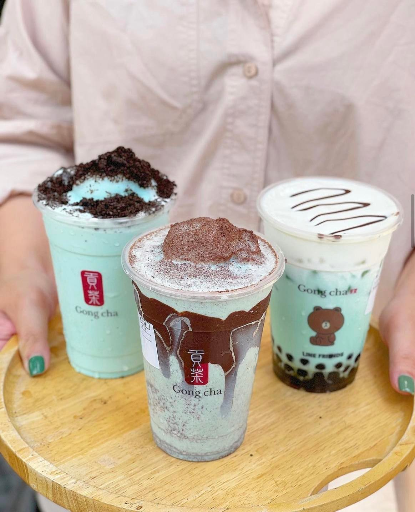
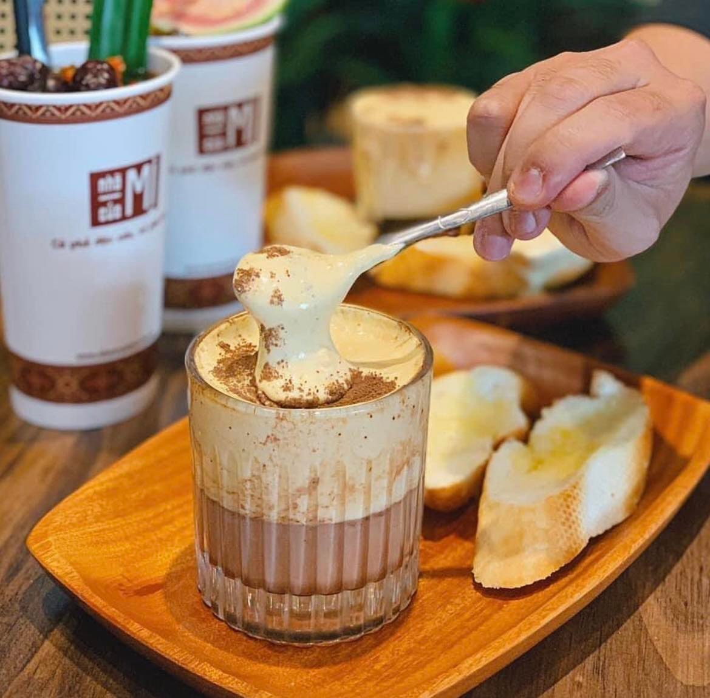
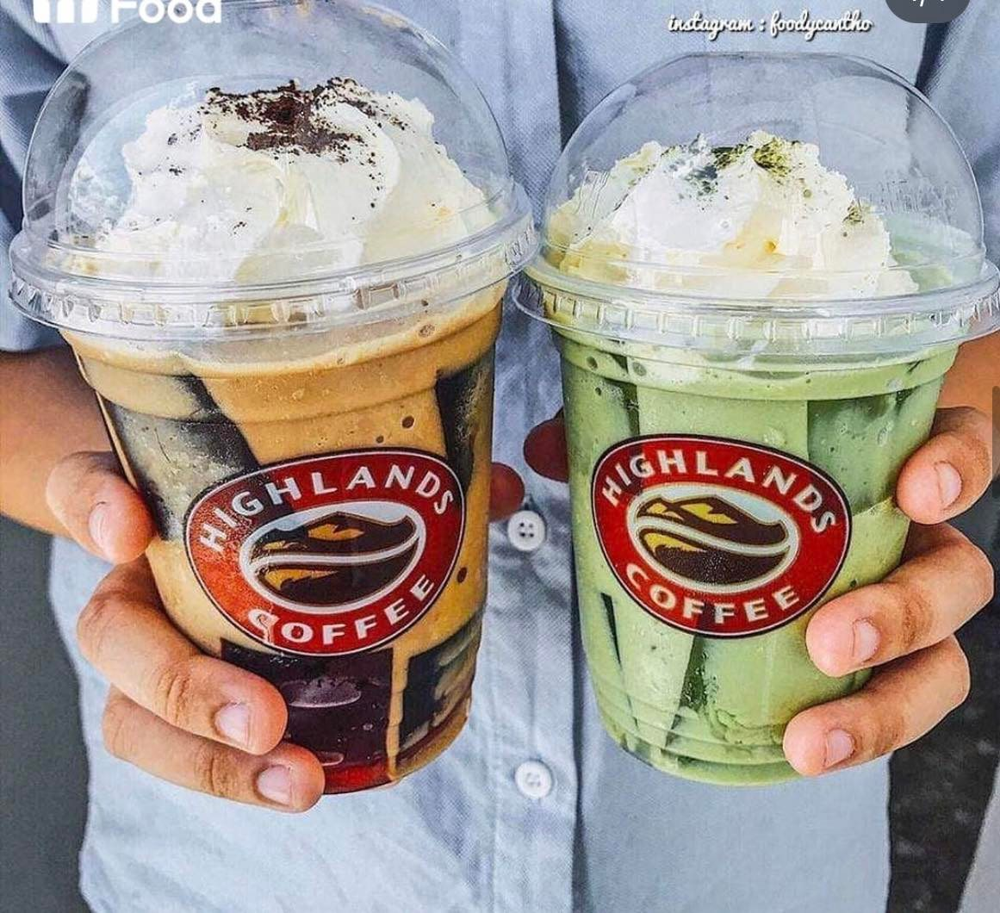
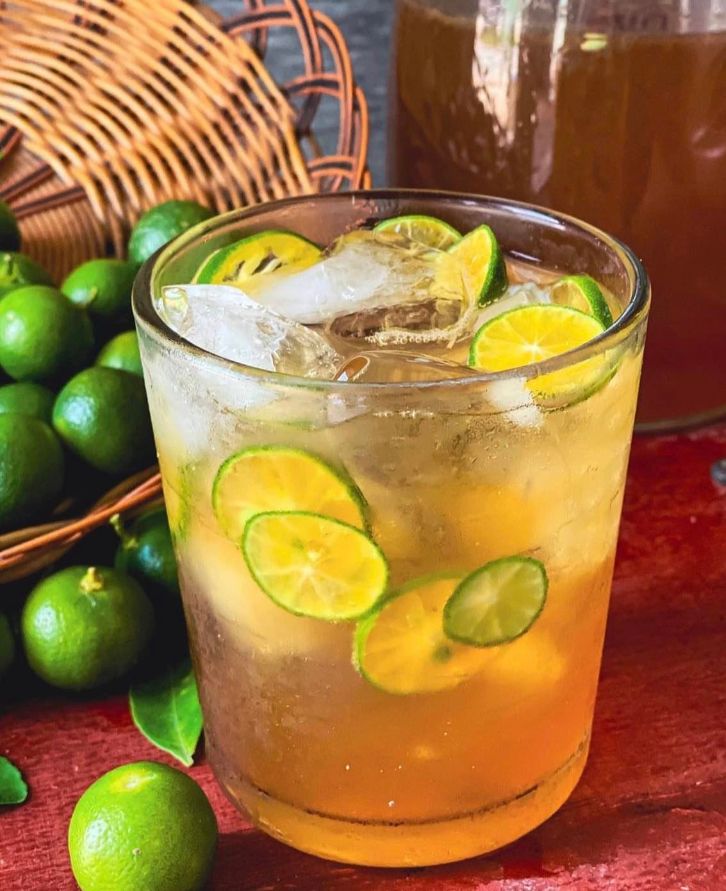
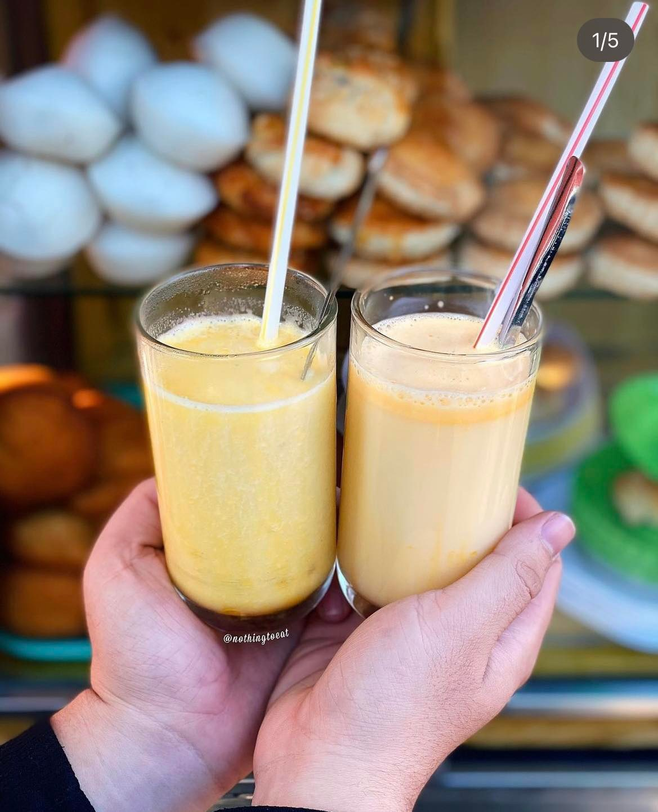

Top 5 drinks in Vietnam that make you addicted
Last updated: 7 December 2022Table of Contents
1. Bubble Milk Tea
In the list of delicious drinks in Vietnam, it is definitely indispensable for bubble milk tea. Bubble milk tea is a Taiwanese recipe made by blending tea with milk, fruit and fruit juices, then adding tasty tapioca pearls and shaking vigorously.

When it comes to Vietnam, Vietnamese people make it more interesting and diverse. Milk tea is so popular in Vietnam, so you can easily find and buy a glass of milk tea at every corner of the street. The toppings and the flavour of the tea are all up to you. It is a great drink for both hot and cold weather.
2. Cà phê trứng
Everyone knows about coffee but have you ever heard about egg coffee? Vietnamese egg coffee (ca phe trung) is made by beating an egg yolk with sweetened condensed milk for about 10 minutes until it makes an airy, creamy, meringue-like fluff. This eggy goodness is then slowly poured on top of hot espresso, or iced coffee.

The egg cream on top of the coffee was rich and silky, but not overly sweet. It sounds a little bit weird to combine egg with coffee. But believe me, try it when you come to Vietnam, it will make you never forget.
3. Đồ uống đá xay
Frappuccino is a line of blended iced coffee drinks sold by Starbucks. It has become familiar in the menus of beverage stores and attracts customers of different ages in Vietnam. Standard blender, recipe and operation are important factors, contributing significantly to creating a delicious glass of crushed ice.

In Vietnam, we have a lot of frappuccino flavours, such as matcha, oreo, mint. In a drink, it is usually included cream on top and jelly. Having a frappuccino in a hot day can help you clear your mind and feel more energetic.
4. Trà tắc
Iced kumquat tea is a drink favoured by many people, especially who likes the sour taste. Kumquat tea is a tasty, tangy drink, which may help fighting cold or flu symptoms. Addition of kumquats, honey gives an extra flavour that makes this drink irresistible.

The smell of kumquat and its sour taste combined with sweet honey contribute to the uniqueness of this drink. It can also be used when it is hot but Vietnamese people like it better when it is cold.
5. Sữa đậu nành
Soy milk in many countries is usually sold in the supermarket as a bottle or a carton. However, in Vietnam we usually buy it on the street in a small bag and it is fresh.

Soy milk not only provides the body with vitamin but it is also so good. Adding a little ice to a glass of fresh soy milk or maybe enjoying it with some jelly and pearls can make your day.